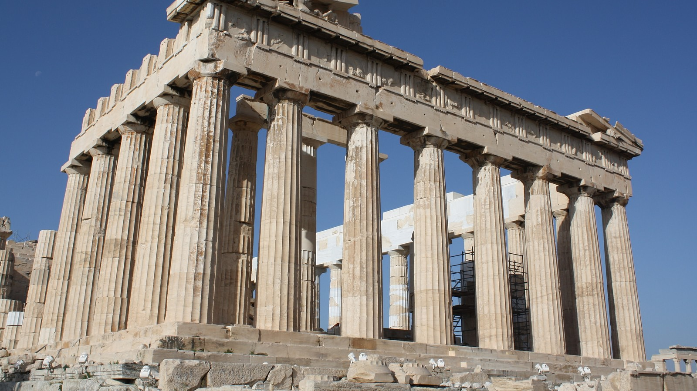
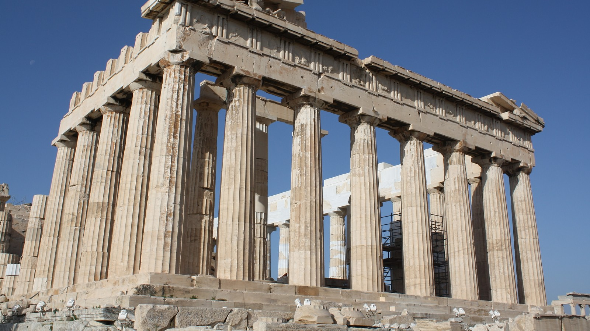
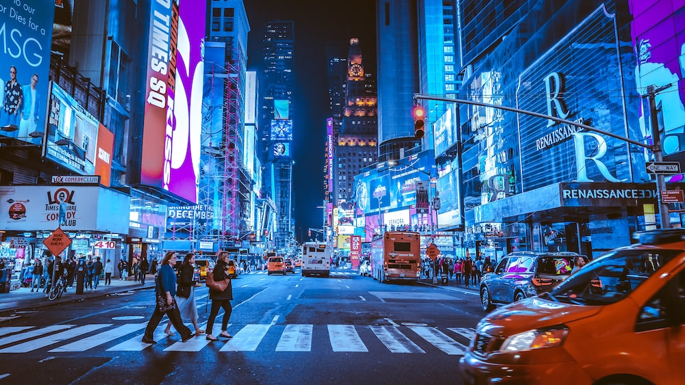

Athens
Athens Geocity is related to everything to do with teaching, education, reading, writing, and philosophy. Specifically in this case philosophy has been focused on as the website topic
 Athens webpage hereGeoCities was a web hosting service that allowed user to create, publish and view user created websites for free. They could view these websites by their interest and theme. Originally the users had to pick a "city" in which to list the hyperlinks to their web pages. The "cities" named after real cities and regions according to what content would be found on these webpages: for example Athens and Acropolis was used for anything teaching, education, reading, writing and philosophy related. This webpage aims to explore and Geocity websites by creating 5 different webpages based on the GeoCity neibourhood and topic.
Athens Geocity is related to everything to do with teaching, education, reading, writing, and philosophy. Specifically in this case philosophy has been focused on as the website topic
 Athens webpage hereFashion Avenue relates to everything fashion related. No other topics are mentioned either so its focused on only fashion
Fashion avenue webpage hereHollywood focuses on all topics relating to films and actors. In this case it is a combination of both in a movie review site
 Hollywood webpage here
Hollywood webpage here
TimeSquare is all topics relating to Computers and video games. In this case its focused on video games via a list of upcoming games webpage.
 TimeSquare webpage here